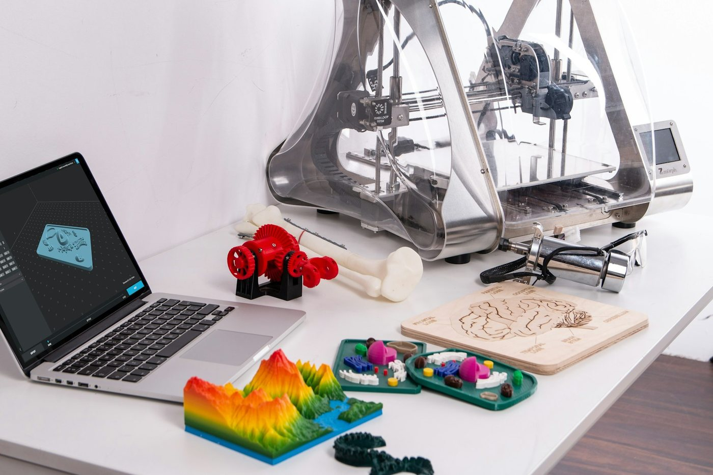

INDEX 05 — MATERIALSFDM / SLA / SLS
素材を選ばない。
ただし、素材ごとに手を変える。
3Dプリントは、造形方式によって積層痕の出方も、塗料の乗り方も、まったく違います。FDMは研磨で埋め、光造形は洗浄と二次硬化を前提にし、SLSは多孔質を作り込む——同じ「下地」でも、素材ごとに手を変えます。ここでは対応方式と、素材別の考え方をまとめます。
SEC. 01PRINTING METHODS
3つの造形方式、
それぞれの下地。
METHOD 01
FDM / FFF方式
FUSED DEPOSITION MODELING
熱で溶かした樹脂を層状に積み上げる方式。3方式の中で積層痕が最も目立ち、研磨とサーフェイサーによる下地づくりが仕上がりを大きく左右します。
この工房での位置づけ — 最も下地に手がかかる＝研磨の技術が最も活きる素材。#800 で面出しし、厚膜プラサフで積層痕を埋め、#1200 で仕上げます。
METHOD 02
光造形方式（レジン）
SLA / MSLA / DLP
液体樹脂を光で硬化させる方式。もともと積層痕が少なく滑らかですが、未硬化レジンの洗浄と二次硬化を済ませないと塗料が乗りません。レジンはアクリル系で、塗料との相性は良好です。
この工房での位置づけ — 洗浄・脱脂・二次硬化の状態を確認してから工程へ。滑らかなぶん下地は軽く、意匠塗装の美しさが素直に出ます。
METHOD 03
SLS方式（粉末）
SELECTIVE LASER SINTERING
ナイロン粉末をレーザーで焼結する方式。表面は多孔質で、ビーズブラストで均一化するのが一般的。塗装には粉末特有の下地づくりが必要です。
この工房での位置づけ — 要相談・テストピース確認を推奨。多孔質を活かした下地で、艶を作り込みます。

SEC. 02MATERIAL MATRIX
素材別の、対応と勘所。
代表的な樹脂ごとの下地処理・注意点・耐候性の目安です。ここに無い素材も、テストピースで相性を確認してからお受けできます。
| 素材 | 造形方式 | 下地の勘所 | 耐候性の目安 |
|---|---|---|---|
| PLAポリ乳酸 | FDM | アセトンは効かないため、研磨とスプレーパテで物理的に平滑化。サーフェイサーで密着を確保します。 | 屋内向き |
| PETG | FDM | 研磨・サーフェイサー・塗装が基本。密着のため脱脂を丁寧に行います。 | UV安定 |
| ABS | FDM | 研磨に加え、アセトン蒸気処理で光沢化する手もあります。塗装前は必ず脱脂。 | 屋内向き |
| ASA | FDM | ABSに近い扱い。屋外用途に向く素材で、クリアのUVカットと相性良好です。 | UV安定 |
| 標準レジンアクリル系 | 光造形 | IPA洗浄とUV二次硬化を前提に。滑らかで下地は軽く、意匠塗装が映えます。黄変対策のクリアを推奨。 | 屋内向き |
| タフレジンABSライク | 光造形 | 靭性が高く、割れにくい。標準レジン同様の下地で、扱いやすい素材です。 | 屋内向き |
| クリアレジン | 光造形 | 段階研磨とクリアコートで透明感を出せます。透過部を活かした意匠にも対応。 | 屋内向き |
| ナイロンPA12 / PA11 | SLS | 多孔質のため下地を作り込む。ブラスト後の均一な面に艶を重ねます。要テスト。 | UV安定 |
※ 耐候性は一般的な目安です。標準レジンは紫外線で黄変・脆化が進むため、屋外長期使用には向きません。撮影・展示・商談用の高品質仕上げとしての運用を前提にしています。屋外で長く使う想定がある場合は、素材段階からご相談ください。
SEC. 03WHY IT MATTERS
失敗の多くは、
塗る前に決まっている。
塗料の食いつき不良やムラは、塗装技術以前の「素地の準備」で起きることがほとんどです。だから、この工房は塗る前の工程に最も神経を使います。
洗浄・脱脂の不足
造形物に残った離型剤・削りカス・指の脂は、塗料の密着を著しく下げます。研磨後に水洗いし、イソプロピルアルコールで脱脂、タッククロスで微粉を除いてから塗装に入ります。光造形品は未硬化レジンの洗浄も欠かせません。
サーフェイサーの省略
下地のサーフェイサー（プラサフ）を省くと、密着も発色も落ちます。厚膜タイプで微細な段差を埋め、塗料が乗る土台をつくる——この一手間を飛ばさないことが、量産品のような均一な面につながります。
厚塗りによる細部の潰れ
一度に厚く吹くと、タレ・ゆず肌が出て、細かな造形ディテールも埋まります。塗る方向を層ごとに変えながら、薄く数回に分けて重ねる——地味ですが、これが仕上がりの質を決めます。
SEC. 04DATA INTAKE
造形から、任せてもいい。
完成した造形物を送っていただくのはもちろん、データ入稿 → 提携出力 → 工房直送の流れにも対応します。出力先と塗装先を別々に手配する手間を省けます。
STL汎用フォーマット
ほぼすべての3Dプリント環境で扱える標準形式。造形するだけなら、これで十分です。メッシュ（三角形の集合）でモデルを表現します。
STEP精密フォーマット
正確な形状を保持する形式（ISO 10303）。寸法精度が重要な場合や、任意の解像度で再メッシュしたい場合に向きます。精密案件ではこちらを推奨します。
※ ご相談時に、造形方式・素材・希望色（カラーコード可）・希望納期をあわせてお知らせいただけると、概算が正確になります。未発表製品はNDA対応可。
GALLERYBEYOND MATERIAL
素材の、その先。
素材ごとに手を変える。それが下地づくりの本質です。


素材が決まっていなくても、
用途から相談できます。
「屋外で使う」「撮影用」「触れる展示物」——用途に合う素材と仕上げをご提案します。